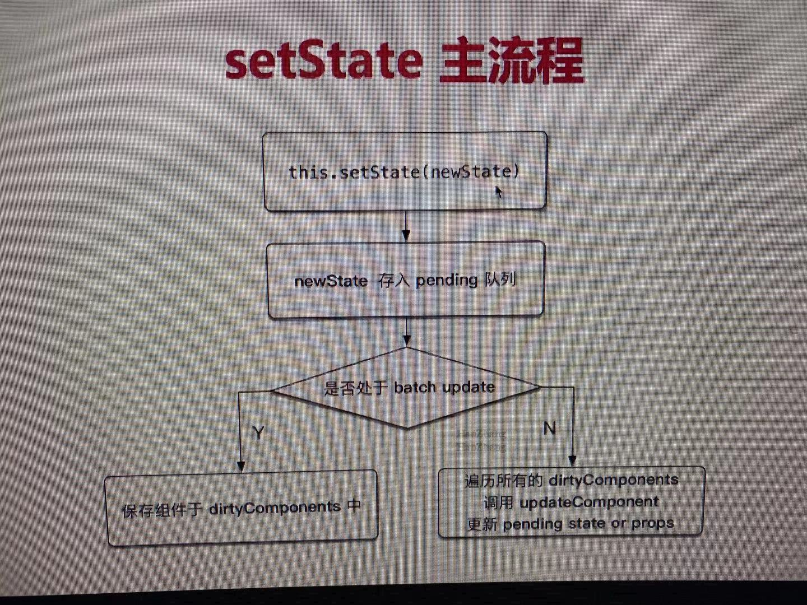

1.1. setState 和 batchUpdate
哪些能命中 batchUpdate 机制
- 生命周期（和它调用的函数）
- React 中注册的事件（和它调用的函数）
- React 可以 '管理' 的入口
哪些不能命中 batchUpdate 机制
- setTimeout setInterval 等 （和它调用的函数）
- 自定义的DOM事件（和它调用的函数）
- React "管不到" 的入口

batchUpdate 过程大概

1.2. React transaction 事务机制
主要是为 batchUpdate服务
transaction 大致过程

该方式存在哪些问题?

如何解决？（通过fiber）